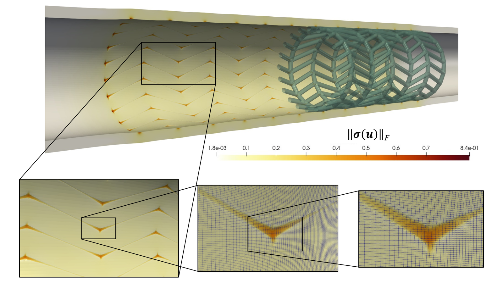
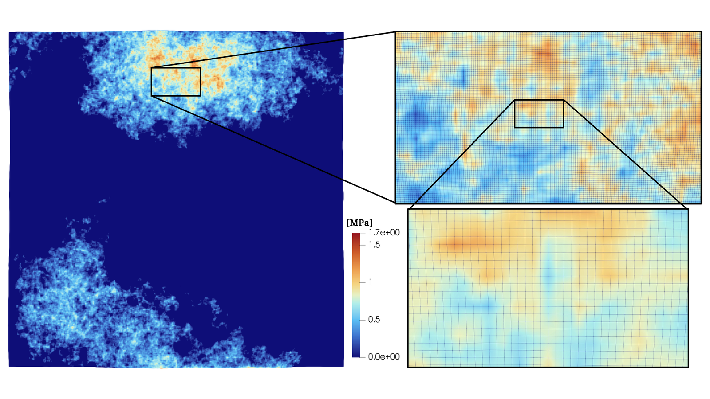

Matrix-free Multigrid Method for Obstacle Problems in Linear Elasticity


Description
Efficient and robust algorithms are essential for solving large-scale contact problems involving complex obstacles. Monotone multigrid methods provide a solid foundation with optimal computational complexity, while penalty and augmented Lagrangian formulations offer flexibility for handling over-constrained systems and fuzzy contact conditions. The augmented Lagrangian method enforces contact constraints with high accuracy and remains competitive with non-smooth techniques such as the semi-smooth Newton method.
We combine the efficiency of multigrid methods with the adaptability of augmented Lagrangian formulations in the Matrix-free Multigrid Augmented Lagrangian (MaMAL) method for contact problems. MaMAL integrates nonlinear smoothing and constraint coarsening, incorporating penalty terms directly into the multilevel preconditioner within an augmented Lagrangian iteration. Matrix-free operators on semi-structured meshes enable simulations exceeding 600 million degrees of freedom on a single NVIDIA GH200 GPU. Numerical experiments show convergence rates and accuracy comparable to state-of-the-art methods, and the effect of the penalty parameter and of a linear line search.